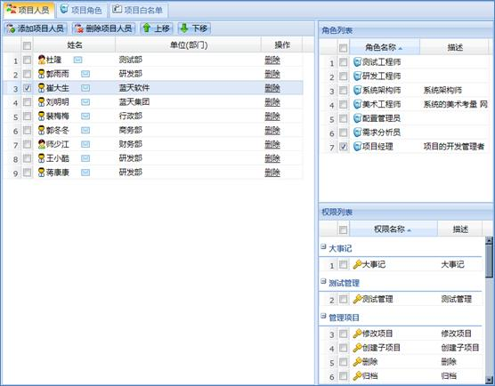
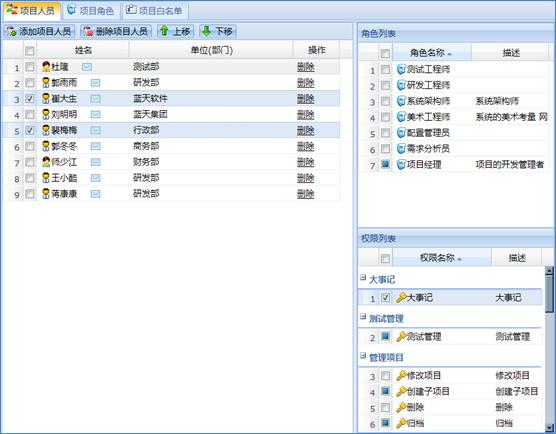
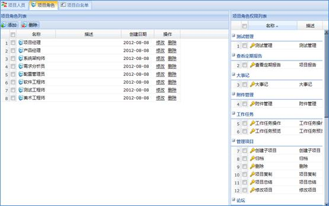
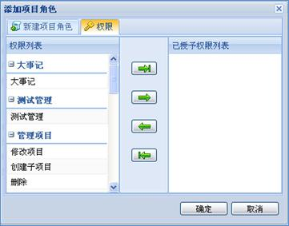

项目人员功能主要用于组织和管理参与项目的人员，包括增删项目人员，授权等操作。项目人员用例和流程图如下图所示：
在项目列表中选择一个项目，选择功能导航区的“项目权限”，然后选择子功能导航区的“项目人员”，此时业务操作区显示所选项目的项目人员信息。业务操作区左边显示项目人员列表，右边上半部分显示角色列表，下半部分显示权限列表，如下图所示：

图 项目人员管理
4.2.14.1.1 项目人员基本管理
1、添加项目人员
点击工具栏的“添加项目人员”按钮或选择项目人员列表右键菜单的“添加项目人员”添加。
2、删除项目人员
点击工具栏的“删除项目人员”按钮或选择项目人员列表右键菜单的“删除项目人员”或操作区的“删除”按钮删除所选的项目人员。项目创建者不允许删除。
4.2.14.1.2 项目人员权限设置
1、权限设置
在项目人员列表区选择项目人员，在右侧权限列表或角色列表中勾选复选框或去掉勾选来改变所选项目人员所具有的权限或角色，如下图所示：

图 权限设置
注意：
取消权限时，如果所选项目人员是项目中唯一拥有项目权限的人员，那么该人员不允许取消“项目权限”，以保证项目人员中至少有一个人能够管理该项目。
2、权限查看
在项目人员列表中选择一个或多个人员，右侧角色、权限列表中显示所选人员的角色、权限信息。复选框样式的含义如下：
复选框样式：表示所选项目人员中至少有一个项目人员有并且至少有一个项目人员没有的权限或角色项（即该项为所选人员中部分人员有的权限或角色项）；
复选框样式：表示所选项目人员都有的项目权限或角色项；
复选框样式：表示所选项目人员都不具有的权限或角色项。
项目角色主要为项目人员的角色管理提供支持，包括增删改项目角色，授权。用例和流程图如下图所示：
在项目列表中选择一个项目，在功能导航区选择“项目权限”，然后选择子功能导航区的“项目角色”，此时业务操作区会显示所选项目的项目角色信息。业务操作区的左半部分显示的是项目角色列表区，右半部分显示的是项目角色权限列表区，如下图所示：

图 项目角色管理
4.2.14.2.1 项目角色基本管理
1、添加项目角色
点击工具栏的“添加”按钮或选择右键菜单的“添加项目角色”添加项目角色。添加项目角色必须选择项目角色名称，可以添加角色描述信息，修改角色权限。
2、修改项目角色
选择右键菜单“修改项目角色”或点击操作区的“修改”按钮修改项目角色。修改项目角色只能修改项目角色的描述信息和权限。
3、删除项目角色
在角色列表中选择一个或多个希望删除的项目角色，点击工具栏的“删除”按钮删除角色。删除单个角色时，也可以选择角色右键菜单的“删除项目角色”选项或点击列表操作区的“删除”按钮删除角色。
4.2.14.2.2 项目角色权限设置
1、权限设置
给一个项目角色授权可以通过以下两种方式：
（1）添加、修改项目角色时，在系统弹出的对话框中选择“权限”标签页，在权限界面为项目角色分配权限，如下图所示：

图 授权界面
（2）在项目角色列表中选择一个项目角色，在项目角色权限列表中勾选相应的权限。
给多个项目角色授权：
在项目角色列表中选择多个项目角色，在项目角色权限列表中勾选相应权限。
2、查看权限
在项目角色列表中选择一个或多个项目角色后，在右侧的项目角色权限列表中可以查看所选角色的权限信息。复选框样式代表的含义如下：
：表示该项为所选项目角色中只有部分项目角色具有的权限项。
：表示所选项目角色都具有的项目权限项。
：表示所选项目角色都不具有的权限项。
项目白名单提供了添加、删除项目白名单人员的功能。白名单人员不参与项目，但是拥有项目的所有权限。